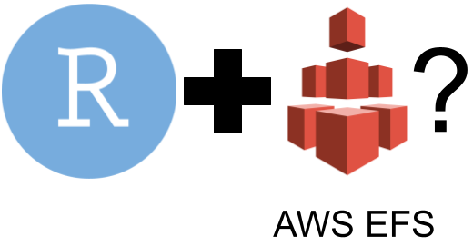
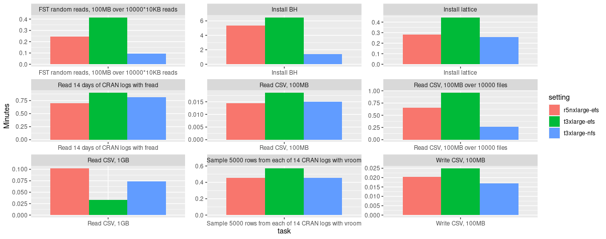
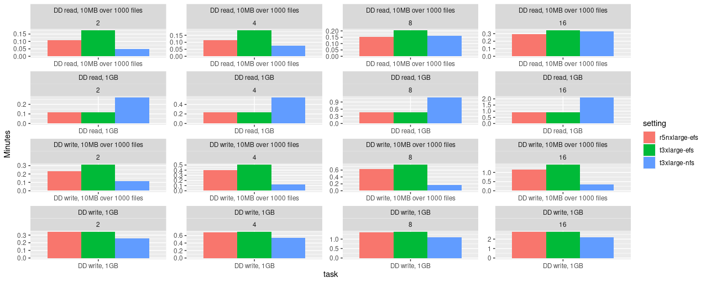
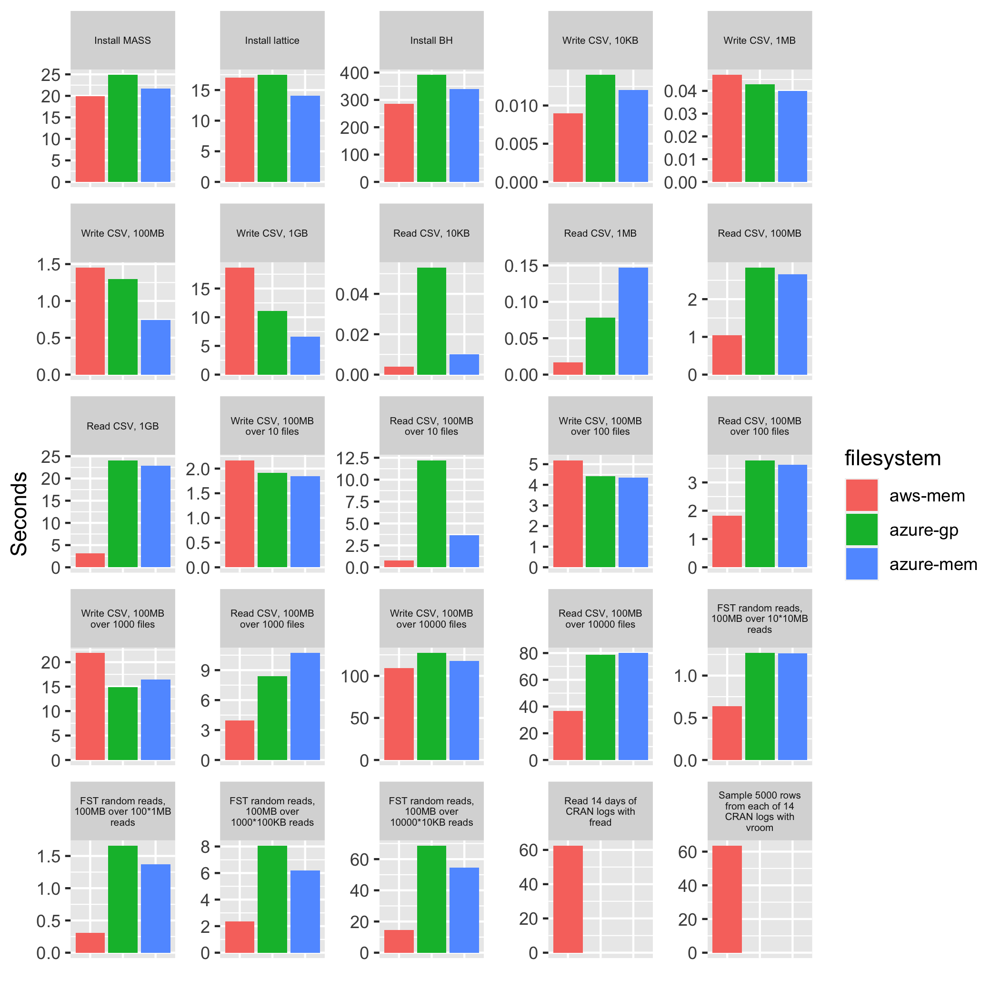

EFS vs. NFS for RStudio on Kubernetes (AWS): Configuration and considerations

As a consulting company with a strong focus on R and Posit (formerly RStudio) products, we have gathered quite a bit of experience in configuration and deployment of Workbench and Connect products in the cloud. We would like to share some of these insights in the following blog post and shine some light on the file system debate around these applications. While the “how to” is very well outlined by various RStudio/Posit resources (1, 2, 3, 4), there’s one important part of the setup which is actively debated among system engineers: the choice and handling of the file system.
But let’s start at the beginning: in the cloud, one has essentially two choices for self-hosting RStudio applications: a single-instance installation on a virtual machine or going with Kubernetes (k8s) for a container-based, high-availability (HA) setup. The latter comes with many benefits, both for users and administrators: HA ensures stability of the service and allows for controlled upgrades, in the best case without any interruption or downtime for users. Users profit from the possible option of requesting CPU and memory resources as needed for their analysis - assuming the k8s cluster runs with an autoscaler which allows provisioning new worker nodes as needed. Potential downsides could be an increased administration complexity, decreased file system performance and eventually higher costs. Though these points cannot be generalized and always depend on the cluster at hand, its purpose and the team managing it.
File systems - general
Users are in continuous contact with the file system even though most are not actively thinking about it. Each time a file is read or written, e.g., during the installation of an R package, the choice of the file system matters. It determines
- How fast the request is processed (latency)
- How many bytes are transferred per seconds (throughput; might differ between read and write operations)
- How many files can be processed at the same time (concurrency)
To understand the following discussion about Elastic File System (EFS) and Network File System (NFS) (including explanations about both), a bit of background is needed how read/write operations can generally be categorized.
Read-write-once (RWO), read-only-many (ROX) and read-write-many (RWX) file systems
Applications running on on-premise machines or single cloud instances usually read and write to a read-write-once (RWO) file system. The “once” here means that this specific file system can only be attached to one instance. Read-only-many (ROX) allows multiple instances to attach a volume but only for reading - only one instance is allowed to mount it in read-write mode. Given their restriction on a single mount point, RWO file systems are usually faster than ROX or RWX. However, RWO comes with the following limitations for HA usage:
- they can only operate in a single AZ (i.e., an RWO volume can only be mounted by a node in the same zone) and this one must match the instance’s AZ
- they cannot be used in (real) high-availability setups as this usually requires pods to run on different nodes - and RWO file systems can only be mounted by a single node
File systems which support read-write-many (RWX) operations allow the attachment by multiple instances, usually across availability zones. They usually have a central (remote) address which can be used to mount them into an instance. This allows for a central deployment of RWX providers on standalone machines.
NOTE1: Availability zones in the cloud are discrete data centers with redundant power, networking, and connectivity in a certain region. Issues appearing in one particular zone do not affect others. Their main purpose of different AZs is to increase reliability.
NOTE2: There’s also read-write-once-pod (RWOP) which means that only one pod on a certain node can read/write to a volume. This is only supported for CSI volumes and k8s > 1.22 [source].

{kind=link}
Kubernetes high-availability and NFS server
To allow for high-availability (HA) in k8s installations, an individual HA-pod needs to communicate with the respective others and access the same files. As the load is usually balanced across replicas, this requires a file system which allows for multiple r/w mounts, i.e., a RWX one.
This is also the case for RStudio applications in HA configuration. There are multiple options for RWX file systems. The most common one, which is also used in many custom multi-server on-premise environments, is NFS.
While NFS is great, well known and fast, it is not so easy to make use of it in the cloud, especially in isolated environments like k8s clusters. On AWS, there is no default k8s support for NFS and hence one needs to deploy their own NFS server which serves as the central access point for mount requests. (An NFS server could in theory live anywhere, as long as it’s reachable by the cluster nodes.)
There’s an official NFS Ganesha provider within the kubernetes-sigs (SIG = special-interest-group) organization on GitHub. However, it does not support HA and we are not aware of any other one which does. Hence, the NFS server within a k8s cluster is usually provided by a single pod. This comes with some severe implications: all pods which rely on some NFS mounts are dependent on this single NFS pod. If the NFS pod gets recreated for some reason (e.g., because its being moved to a different node or the deployment is updated), all pods which a NFS mount will be unable to read and write data until the new node has attached the NFS volume again (which is usually still bound to the old node for ~ 5 min).
This is a pivotal and tricky issue: the pod health of a pod making use of an NFS mount does not necessarily depend on the NFS mount once its running. This means if the NFS server pod is down (for whatever reason), dependent deployments appear as “healthy” to the cluster (admins) but the users will fail to read and write data.
The number of times a pod gets recreated/restarted/moved on a cluster depends on multiple factors:
- How often are the individual nodes recreated?
- Who is responsible for scheduling pods to individual nodes?
- Are nodes running on permanent/reserved instances or on SPOT instances (an AWS-only term for cheaper nodes which can be reclaimed any time) which are more often reclaimed/recreated by the cloud provider?
Our experiences with NFS on Kubernetes
We at cynkra started out with an NFS server for hosting RStudio applications on a k8s cluster, mainly because existing guides suggested doing so and warn using EFS. Judging from our experiences on a 3-5 node cluster on AWS with a self-managed autoscaler and node refresh enabled (which means that nodes get replaced frequently, e.g., whenever a new machine image is available), we have seen the NFS pod getting relocated every few days/weeks. Often this caused the mentioned problems above, i.e., RSC and/or RSW not being able to use due to stale file handles or other r/w issues. If the NFS server ran in an HA setup, this task would be completely trouble-free as the other pods would take over the incoming requests. However, in a non-HA deployment, this causes potentially unwanted downtime for multiple dependent applications.
While there are ways in k8s to reduce/avoid the automatic recreation of non-HA pods, serving content on a k8s cluster usually comes with the philosophy of being able to move/recreate every pod in the cluster without immediate consequences. Yet the fact that this seems impossible (as of right now) for an NFS server deployment represents a constant stability risk. It makes the HA deployments of all RStudio services essentially meaningless as they would all fail once the NFS pod would be down.
One could also host the NFS server outside of the cluster on a normal VM which does not reboot that frequently and does not recreate the NFS server service. However, this would mean opening up the k8s network to include this machine and eventually hosting a dedicated machine only for the NFS server. This approach would also not solve the potential bottleneck issues - whenever this machine needs a reboot, all dependent services would face some downtime. In addition, this approach would not be multi-AZ capable because the private subnets, which are used for a fast and secure connection between the nodes, do not support this - private subnets can only operate within a single AZ. A k8s cluster is essentially about two things: high-availability and scalability. Adding a static, non-scalable component (= remote NFS server) which acts as a dependency for many services, into the cluster contradicts with this principle.
The main happenings which made us overthink our current setup was seeing spurious behavior after NFS pod recreations: with both the NFS pods and the RStudio pods in a healthy state, sometimes ‘stale file handle’ issues occurred for users when trying to write data. RSC was not able to serve content as it could not read data anymore. All of these were issues detected by users and reported to the responsible engineers (i.e., us) - which is exactly what engineers try to avoid at all cost. The issue could often be solved by simply recreating the RSC pod, which then triggered a fresh reconnection to the NFS server. We assume this behavior to most likely be a regression caused by a previous NFS pod relocation.
It was time to look into alternatives. Since some years, most cloud providers offer their own, cloud-based RWX file systems. These claim to be very flexible in the way that they are available for mounts in all AZs. Cluster admins only need to configure a driver (which allows to define certain mount options) but the file system itself is hosted by the cloud provider in an HA setting. AWS calls it EFS (elastic file system), on Azure it’s called “azure files.” Google does not provide a native RWX solution (only ROX) and one is required to use a self-managed NFS server for RWX.
Since we are on AWS, we thought about giving EFS, the native AWS multi-AZ RWX offering, a try. We were aware of the warnings given out by RStudio about possible performance issues. Luckily, we were not the first ones to try EFS with RStudio products. The RStudio engineers already wrote an article about RStudio applications with EFS, especially targeting the performance topic (see linked article).
Besides the higher price (around 3x) of EFS compared to EBS (elastic block storage = default RWO file system), which is used behind the scenes by an NFS server deployment, EFS is somewhat lacking in performance compared to NFS. The following figures show some file system benchmark results which we have carried out on different instance types. Network-optimized instance types (r5n on AWS) were said to improve EFS performance which is backed up by our results.
 Fig. 1: Sequential benchmarking results of EFS (executed on r5n.xlarge and t3.xlarge instances) and NFS (executed on a t3.xlarge instance). Benchmark source: rstudio/fsbench.
Apparently, one of the main reasons (according to discussions on the web) is that EFS is used by many people around the world and needs to split its available resources dynamically across all clients. There are ways to increase performance (e.g., by selecting a different mode, increasing the size of the file system or tweaking certain mount options). However, in the end EFS will always stay slower than NFS.
 Fig. 2: Parallel benchmarking results of EFS (executed on r5n.xlarge and t3.xlarge instances) and NFS (executed on an t3.xlarge instance). Benchmark source: rstudio/fsbench.
We’ve also compared Azure’s Azure Files NFS offering to AWS EFS using the fsbench tool from RStudio. At first we were optimistic giving the higher maximum values reported for the Azure NFS service. However, the benchmark results show a different picture and do not encourage moving existing RStudio k8s deployments from AWS to Azure.

Fig. 3: Sequential benchmarking results of AWS EFS (aws-mem = r5n.large) and Azure Files NFS (azure-gp = D2s_v3; azure-mem = E2bds_v5). Benchmark source: rstudio/fsbench.
Having compared NFS and EFS performance-wise now and given that file system decisions are usually deliberate ones, the question for us was: how much slower is it compared to NFS and do the upsides of EFS outweigh it? After trying it out for ourselves, we concluded yes, the advantages of EFS outweigh its decreased performance and we should use it as the file system for our RStudio k8s clusters. With EFS, we
- don’t need to worry about a single NFS server deployment as a potential bottleneck
- can more easily make use of multiple availability zones
- have a file system which dynamically adjusts to storage use (expansion and shrinking)
- eventually improves (in speed) over time
We are aware that users coming from a k8s-NFS or on-premise installation will experience a reduced speed due to some increases in latency and especially when working with many small files. However, these will only be apparent for people coming from existing RSW installations and not for ones starting out on a new cluster. Especially users coming from an RSW on-premise installation will feel a substantial decrease in speed as in such an environment usually a single-instance RSW runs on an RWO file system (usually ext4) which is a completely different ballpark. FWIW, AWS has also improved EFS latency in February 2022, making it more performant for existing and new customers at no additional cost.
Another (important) point worth mentioning is that on AWS, bottlerocket node images (more on that in a separate blog post) do not have native support for NFS but work with EFS. This becomes of interest when considering running a cluster on bottlerocket images or if the cluster is already doing so.
RStudio k8s clusters on EFS - Deployment
During our EFS evaluation period, we came across potential pitfalls and other RStudio peculiarities which system admins need to be aware of when aiming for a k8s RStudio cluster. These are described in the following.
Note: This section makes a few assumptions:
- A k8s cluster on AWS
- Full cluster admin permissions
- RStudio Workbench and RStudio Connect “Enterprise” licenses
- The use of
terraformand the RStudio helm charts
First, we would like to refer to the official implementation instructions for setting up RStudio applications on Kubernetes. While these do not necessarily target EFS, they contain a lot of information about NFS and other important points to be aware of.
Deploying the EFS driver and storage class(es)
Before EFS can be used, an EFS driver and corresponding storage class must be deployed in the cluster. The latter is then referenced within the RStudio deployments. There is an official kubernetes-sigs helm chart available at https://github.com/kubernetes-sigs/aws-efs-csi-driver which one can use.
resource "helm_release" "aws-efs-csi-driver" {
name = "aws-efs-csi-driver"
chart = "aws-efs-csi-driver"
repository = "https://kubernetes-sigs.github.io/aws-efs-csi-driver"
version = "2.2.7"
create_namespace = true
namespace = "aws-efs-csi-driver"
count = 1
values = [
"${file("${path.module}/values/aws_efs_csi_values.yml")}"
]
# rsc
set {
name = "storageClasses[0].parameters.fileSystemId"
value = aws_efs_file_system.eks_efs.id
}
# rspm
set {
name = "storageClasses[2].parameters.fileSystemId"
value = aws_efs_file_system.eks_efs.id
}
}The important part is the configuration of the chart values, which defines the storage classes. And yes, it is required to define multiple ones here, one for each RStudio service. The reason is that each service works different with respect to mount permissions of the respective application user (rstudio-server, rstudio-connect, rstudio-pm) and the way EFS is implemented (i.e., access points). There are two ways EFS can be used:
- dynamic provisioning
- static provisioning
The former is usually preferred. It means that persistent volumes can be created in a dynamic way, i.e. if a deployment asks for one, a new one gets (dynamically) created during the application deployment.
Static provisioning, on the other hand, means that one needs to create a persistent volume manually, referring to specific EFS mount points and in addition also configure its claim (PVC) (semi-)manually (“semi” because the PVC will find the PV it the names match and the chart offers to create it).
Now EFS behaves like so that if dynamic provisioning is used, a single uid and gid must be set which then owns the mounted directories recursively. This way does not respect individual user permissions for the respective directory tree. This is something that is OK (and even needed) for RSC and RSPM but unacceptable for RSW. With this state in an RSW deployment, each user would have full permissions on the files of all other users. Hence, for RSW, static provisioning is required as this allows for a more fine-grained control. In the efs-sc-rsw storageClass definition below, this is reflected by
- not setting a
uidandgidvalue - setting the base path to
/instead of a dynamically provisioned subpath
Note that the basePath name for RSC and RSPM storage classes could be any name and "/dynamic_provisioning" is a subjective choice on our side.
For RSC and RSPM one also needs to supply the fileSystemId of the EFS file system to use. As this is done dynamically in our case, it is specified via the set{} notation.
# only needed for dynamic provisioning - static provisioning must use a custom PV
storageClasses:
- name: efs-sc-rsc
reclaimPolicy: Retain
volumeBindingMode: Immediate
allowVolumeExpansion: true
mountOptions:
- tls
parameters:
provisioningMode: efs-ap
directoryPerms: "700"
uid: "999"
gid: "999"
basePath: "/dynamic_provisioning"
- name: efs-sc-rsw
reclaimPolicy: Retain
volumeBindingMode: Immediate
allowVolumeExpansion: true
mountOptions:
- tls
parameters:
basePath: "/"
- name: efs-sc-rspm
reclaimPolicy: Retain
volumeBindingMode: Immediate
allowVolumeExpansion: true
mountOptions:
- tls
parameters:
provisioningMode: efs-ap
directoryPerms: "700"
uid: "99"
gid: "99"
basePath: "/dynamic_provisioning"Configuring RStudio helm charts
Next, these storage classes need to be referenced in the respective RStudio deployments. As we are using dynamic provisioning for RSC and RSPM, we can let the helm chart create the PV and PVC. In the definition below, the create: and mount: fields only refer to the PVC. The PV will be provisioned dynamically in the background.
sharedStorage:
create: true
mount: true
name: "pv-rsc-shared"
storageClassName: efs-sc-rsc
requests:
storage: "20Gi"For RSW, more work is required. Here, the PV does not get provisioned dynamically and needs to be created manually via terraform. It helps to use the same name as the PVC, which is created by the helm chart, would search for. This also avoids having to create the PVC within terraform.
Note that here data.aws_efs_file_system.efs.id is the same value which was being referenced in the aws-efs-csi-driver helm chart above. To retrieve it, one needs to filter it from all existing file system IDs listed which are present in your account. In our case we use a tag for filtering but the terraform module also lists alternative ways to filter the correct ID. To protect the PV, we also set prevent_destroy = true so that potential terraform applies would not allow this PV to get deleted.
resource "kubernetes_persistent_volume" "pv-rsw-home-efs" {
metadata {
name = "pv-rsw-home-efs"
}
spec {
capacity = {
storage = "50Gi"
}
access_modes = ["ReadWriteMany"]
storage_class_name = "efs-sc-rsw"
persistent_volume_source {
csi {
driver = "efs.csi.aws.com"
volume_handle = data.aws_efs_file_system.efs.id # filesystem ID
}
}
}
lifecycle {
prevent_destroy = true
}
}
data "aws_efs_file_system" "efs" {
tags = {
Env = "prod"
}
}In the RSW helm chart, one would then define the following
homeStorage:
create: true
mount: true
name: "pvc-rsw-home-efs"
storageClassName: "efs-sc-rsw"
requests:
storage: "50Gi"In contrast to RSC and RSPM, RSW comes with two persistent volumes: home storage and shared storage. Due to the nature of EFS, the RSW deployment will complain about missing permissions for the default location under /var/lib/ - see also this GitHub issue. To bypass this issue, one can change the default mount location of the shared storage and set it to the EFS home mount under /home to make it persistent.
config:
server:
rserver.conf:
server-shared-storage-path: /home/rstudio-shared-storageThis should be it! With this setup, individual user permissions are honored within /home and RSW should be running on EFS. When inspecting /home in more detail, you will notice that all the other base_path mounts from the dynamic EFS provisioning are also there. But don’t worry, RSW users won’t have permission to look into them. You can just safely ignore it. If you still don’t like it, you need to create a dedicated EFS file system ID which is only used for RSW and does not contain additional access points used by the dynamic storage class provisioner.
Improving RSW performance on EFS: bottlerocket images and instance type choice
After having a running deployment of RSW on EFS, one can optionally make use of bottlerocket images to substantially decrease the session startup times on freshly provisioned nodes (i.e., after an autoscaler scale-up). We will cover this topic in more detail in another post.